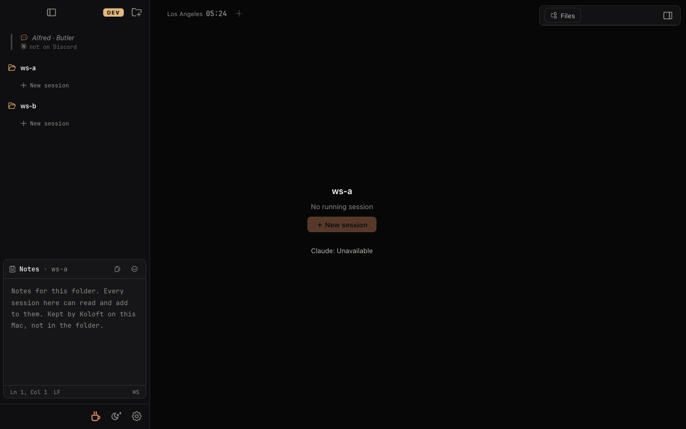
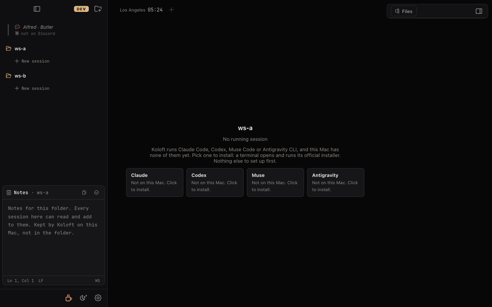
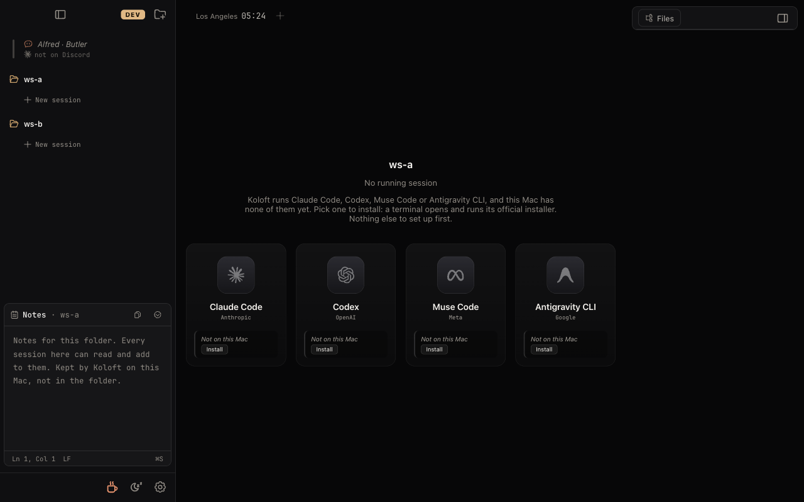

#521: install cards on the empty panel when this Mac has no agent
In one line: a folder with no running session, on a Mac where none of the four agents is installed, today shows a grey button you cannot press. After: it shows four cards, one click each to install.
Issue #521. Checked against the code by an independent review. All three pictures are screenshots of the built Koloft, in a test setup where this Mac has no agent. The option pictures were taken by putting the cards into the real panel, styled by the app's own compiled CSS (notes/521/capture.spec.ts).
Today: After (option A):
┌──────────── ws-a ────────────┐ ┌──────────── ws-a ────────────┐
│ No running session │ │ No running session │
│ [＋ New session] ← grey │ │ Koloft runs … none of them … │
│ Claude: Unavailable │ ──▶ │ [Claude][Codex][Muse][Antig…]│
│ (hover shows "Not │ │ click one → a terminal tab │
│ installed") │ │ installs it → cards go, │
└──────────────────────────────┘ │ the button lights up │
└──────────────────────────────┘
What it looks like today

Who lands here
Screen 1 of the welcome steps has Install buttons, but many people never reach them:
- The welcome only opens on a first launch with an empty sidebar (
App.tsx:1115-1121). Anyone who already had a folder in Koloft never sees it and lands straight on this panel. - Someone who presses "Skip setup" (or esc) on the welcome.
- Someone who removes their agent later.
Today their only way to the Install buttons is Settings ▸ Welcome ▸ "Show welcome again" (WelcomePane.tsx:125-133).
Three options
A. Reuse the small install cards the Koloft Assist dialog already has recommended

InstallHint, AssistSetup.tsx:40): the same card titles ("Claude", "Codex", "Muse", "Antigravity"), the same sentence above them (AssistSetup.tsx:82), and the app's existing .ob-choices / .choice styles. While the cards show, the grey button and the "Claude: Unavailable" line do not.- Click a card: a terminal tab opens, titled "Install Codex" (the Assist dialog's titles: "Install Claude", "Install Muse", …) with a Cancel bar, and runs that agent's official installer — the same path the welcome steps and the Assist dialog already use (
installTool→openSignInTab). - Install worked: the installer exits, the tab closes, the empty panel comes back (main asks for a new check,
index.ts:3245), the cards are gone, "＋ New session" is lit. The panel must read the check that stays mounted inApp.tsx:377-392, not a fresh one, or the cards would flash back for a moment before the button lights up. - Install failed: the tab stays with its error (the welcome's T-OB-14 test covers this path); once closed, the cards are still there to try again.
- Cost: about +20 runtime lines (a few of them one CSS rule that keeps the cards from spreading across the whole middle) and one e2e case. Small cards, in the same style as the rest of the panel.
B. Move the big cards from welcome screen 1

.wl-agent cards (icon, maker, small Install button), shrunk to 78% in this picture to fit.- Good: each card has the agent's icon; it looks like the welcome.
- Cost: these cards' font and colour variables are only defined inside the welcome's full-screen layer
.wl. Moving them means moving the variables and grid to a shared place, wrapping to two rows when the Workbench is open and the middle gets narrow, and pulling the welcome card into a shared component. About +80 runtime lines, and the only welcome-styled thing on the empty panel.
C. Leave it as it is
- Cost: someone who skipped the welcome still has no way forward unless they find the welcome replay. The issue is closed.
When the cards show
- Only when: the chosen folder is on this Mac, Koloft has finished checking this Mac, and none of the four agents is installed — the issue's own words ("no supported tool is installed").
- Not during the short moment the check is still running (the welcome waits for it the same way).
- Once any one agent is installed: the same as today, a working "New … session" button and no cards.
- The check itself failed: the same as today — the button stays lit and a "Retry" button shows (
SessionLaunchButtons.tsx:419-423). No cards, since Koloft does not know what is missing. - An agent is installed but turned off in Settings ▸ Sessions: the same as today (grey button). No cards: installing would not help, turning it on would.
The rule is the one the Assist dialog already uses: useAssistSetup().noTool with toolsKnown (useAssistSetup.ts:29-34).
Each kind of session tab
The empty panel shows before any tab exists, so this says what a folder of each kind shows. The four agents are Claude Code, Codex, Muse Code and Antigravity CLI; each runs on this Mac or on another machine over SSH (Secure Shell).
| Folder | Agent | Empty panel when this Mac has no agent |
|---|---|---|
| This Mac | Claude Code | Four cards, one per agent; click the one you want. Once installed, the button lights up by today's rules. |
| Codex | ||
| Muse Code | ||
| Antigravity CLI | ||
| Remote (SSH) | Claude Code | No cards, same as today. A remote folder always offers Claude Code unless it is turned off in Settings ▸ Sessions (it runs on that machine, whatever this Mac has: #1282, checkedOnThisMac, sessionBackend.ts:254), so its button is not grey. Remote Codex, Muse and Antigravity are offered only when this Mac has them, so with none installed the remote menu offers only Claude Code — true today, not changed here. (For Codex this is because its remote tab runs this Mac's program, CODEX§16; for Muse and Antigravity it is the same gate in the code, not probed.) |
| Codex | ||
| Muse Code | ||
| Antigravity CLI |
Also: the "No workspace yet" panel (no folder added) gets no cards — its "Choose Folder…" works, and then the panel above shows. A folder whose past sessions show under "Recent" on the panel gets the cards too (resuming one would fail the same way without an agent).
Existing users after the update
Anyone with at least one agent installed (nearly every existing user) sees no change. Only a Mac with no agent gets the cards on the empty panel. No setting moves.
Left out
- Cards on a remote folder to install Codex, Muse or Antigravity on this Mac.
- Cards for the missing agents when some are installed (the issue asks only for "none installed").
- The other ways to start a session — the sidebar's "＋ New session" row, ⌘N and ⌘P — are the same grey button today when nothing is installed (
WorkspacePicker.tsx:303-315,CommandPalette.tsx:459-478). They stay as they are: the empty panel with the cards sits right next to them.